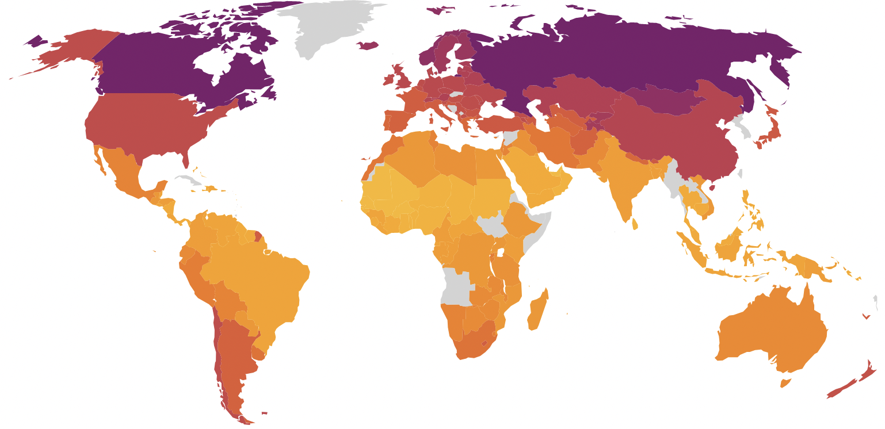
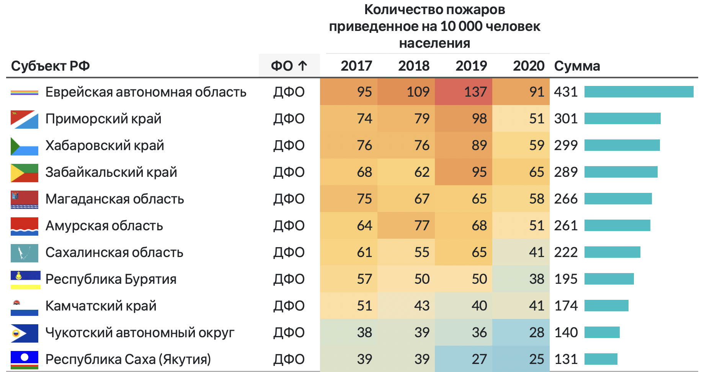
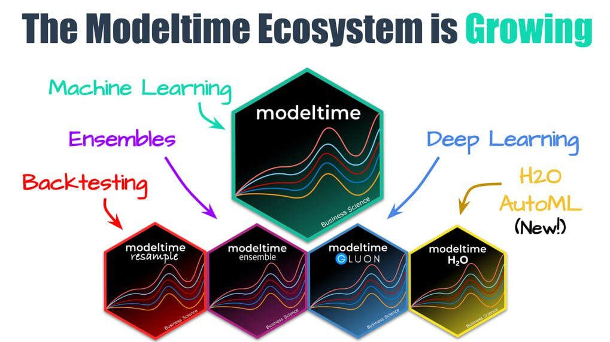

Наука и данные
Блог
Публикации
Об авторе
Категории
Все
(8)
Quarto
(1)
Rstats
(7)
ggplot2
(1)
highcharter
(1)
modeltime
(1)
rayvista
(1)
reactable
(1)
sfnetworks
(1)
spatial
(3)
timeseries
(1)
Сортировать
по умолчанию
Заголовок
Дата - сначала старые
Дата - сначала новые
Визуализация трехмерных моделей земной поверхности
Примеры 3D-визуализаций цифровой модели рельефа местности средствами библиотеки rayvista
rayvista
spatial
Rstats
4 марта 2024 г.
Е.Н. Матеров
Приемы работы и секреты ggplot2
Некоторые практики и советы по работе с ggplot2
ggplot2
Rstats
4 марта 2024 г.
Е.Н. Матеров
Научно-издательская система Quarto
Обзор научно-издательской системы Quarto
Quarto
13 ноября 2022 г.
Е.Н. Матеров

Введение в библиотеку highcharter
Обзор библиотеки highcharter для визуализации интерактивной графики
highcharter
Rstats
16 марта 2022 г.
Е.Н. Матеров
Анализ графа дорожной сети
Примеры анализа дорожной сети городской инфраструктуры на основе графов, встроенных в географическое пространство
sfnetworks
spatial
Rstats
21 февраля 2022 г.
Е.Н. Матеров
Анализ географически распределенных объектов городской инфраструктуры
Обзор возможностей языка программирования R в применении к анализу расстояний между объектами городской инфраструктуры
spatial
Rstats
22 ноября 2021 г.
Е.Н. Матеров

Интерактивные таблицы средствами языка R
Примеры создания интерактивных таблиц на основе библиотеки reactable
reactable
Rstats
20 июля 2021 г.
Е.Н. Матеров

Использование машинного обучения для анализа временных рядов
Обзор работы с библиотекой modeltime, использующей машинное обучение для моделирования и прогнозирования временных рядов
modeltime
timeseries
Rstats
9 января 2021 г.
Е.Н. Матеров
Нет подходящих элементов